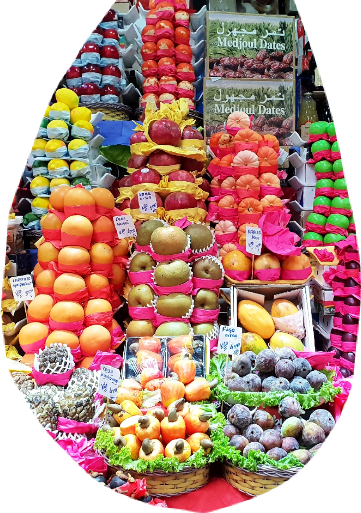
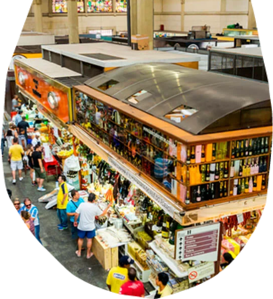

<div class="voc-sabia-polo-mooca">
    <div class="div">
      <div class="overlap">
        <div class="overlap-group">
          <div class="group">
            <div class="overlap-group-2">
              <div class="voc">VOCÊ</div>
              <div class="sabia">SABIA?</div>
            </div>
          </div>
          <div class="paragrafo-com-scroll">
            <p class="a-atual-identidade">
                O Mercadão, como é conhecido, é local de encontro de todos os povos e diferentes culinárias que moldam a gastronomia 
                paulistana. É impossível passear por seus corredores e não ser atraído pelo aroma das especiarias, produtos e iguarias, 
                ou ser tentado a provar o famoso sanduíche de mortadela.&nbsp;&nbsp;<br /><br />
                Imponente, o Mercadão, como é conhecido entre os paulistanos, ostenta seus 90 anos de vida com orgulho. 
                Desde 1933, é a cara da cultura gastronômica paulistana, testemunhando e moldando a identidade da cidade.
                Trata-se de um universo de sensações.&nbsp;&nbsp;<br /><br />
                Os corredores transbordam de cores vibrantes e perfumes exóticos, criando uma atmosfera única que aguça os sentidos. 
                Frutas, legumes e verduras frescos, vindos de todas as partes do Brasil, compõem um mosaico de cores e texturas. 
                Queijos, vinhos, especiarias e produtos típicos de diversas regiões do país e do mundo convidam a uma viagem gastronômica inesquecível.&nbsp;&nbsp;<br /><br />
                Um palco de encontros e memórias. 
                O Mercadão é um ponto de encontro para pessoas de todas as origens e histórias. 
                Famílias se reúnem em torno de mesas fartas, amigos compartilham risadas e conversas animadas, e turistas se encantam com a cultura local. 
                Um símbolo da alma paulistana.
            </p>
          </div>
          
        </div>
        <div class="overlap-2">
           
        </div>
      </div>
      <div class="vector-wrapper"></div>
      
      
      
      <div class="img-wrapper"></div>
    </div>
</div>
